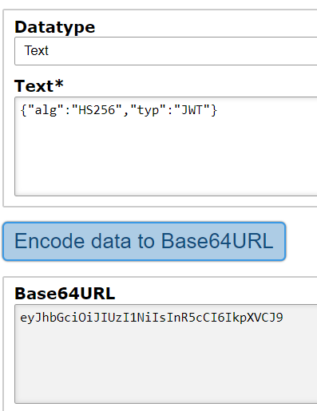

RSA Key Confusion (CVE-2016-5431)
Change AlgorithmJWT accepts both symmetric and asymmetric encryption algorithms. Depending on the encryption type, you need to use either a shared secret or a public-private key pair:
| Algorithm | Key used to sign | Key used to verify |
|---|
| Asymmetric (RSA) | Private key | Public key |
| Symmetric (HMAC) | Shared secret | Shared secret |
• HS256 indicates that this token is signed using HMAC-SHA256
• RS256 indicates that this token is signed using RSA-SHA256
When an application uses asymmetric encryption, it can openly publish its public key and keep the private key secret. This allows the application to sign tokens using its private key and anyone can verify this token using its public key. The algorithm confusion vulnerability arises when an application does not check whether the algorithm of the received token matches the expected algorithm.
In many JWT libraries, the method to verify the signature is:
◇ verify(token, secret) – if the token is signed with HMAC
◇ verify(token, publicKey) – if the token is signed with RSA or similar
Unfortunately,
in some libraries, this method by itself does not check whether the received token is signed using the application’s expected algorithm. That’s why in the case of HMAC this method will treat the second argument as a shared secret and in the case of RSA as a public key.
If the public key is accessible within the application, an attacker can forge malicious tokens by:
1. Changing the algorithm of the token to HMAC
3. Tampering with the payload to get the desired outcome
4. Signing the malicious token with the public key found in the application
jwt_tool <JWT_Token> -X k -pk public-key.pem
6. Sending the JWT back to the application
The application expects RSA encryption, so when an attacker supplies HMAC instead, the verify() method will treat the public key as an HMAC shared secret and use symmetric rather than asymmetric encryption. This means that the token will be signed using the application’s non-secret public key and then verified using the same public key.
To avoid this vulnerability, applications must check if the algorithm of the received token is the expected one before they pass the token to the verify() method.
Using trivial secrets
With symmetric encryption, a cryptographic signature is only as strong as the secret used. If an application uses a weak secret, the attacker can simply brute-force it by trying different secret values until the original signature matches the forged one. Having discovered the secret, the attacker can use it to generate valid signatures for malicious tokens. To avoid this vulnerability, strong secrets must always be used with symmetric encryption.
Bibliography:
https://www.invicti.com/blog/web-security/json-web-token-jwt-attacks-vulnerabilities/